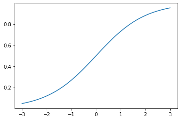

Odds and LogOdds
Odds
The probabilty of an event occuring is a simple ratio of “instances where it happens” divided by “all possibilities”, or
$\frac{ObservedTrue}{AllObservations}$
For example, rolling a 1 on a 6-sided die is
$\frac{1}{6} = .166667$
By contrast, the odds of an event is a flat look at “instances that it happens” against “instances that it doesn’t happen”. In our dice example, we’d simply have
$1:5$
Odds Ratio
Alternatively, we could express the odds of an event as a ratio of
$\frac{Pr(Occurring)}{Pr(NotOccurring)}$
This gives us a single number for ease of interpretation– think 199:301 vs 0.661
Log Odds
However, it should be immediately obvious that interpretation of the scale of the odds ratio leaves something to be desired.
For instance, if something happens with 1:6 odds, the odds ratio is .166. Conversely, if we were looking at 6:1 odds, the odds ratio would be 6.0.
Indeed, if something is more likely to happen, the odds ratio will be some value between 1 and infinity. On the other hand, if it’s less likely, it will simply be bounded between 0 and 1.
This is where the log function proves to be particularly useful, as it gives a symmetric interpretation of two numbers in odds, symmetric around 0.
Taking the log of the above, we’ve got:
1:6 -> 0.166 -> log(0.166) -> -0.77
6:1 -> 6.0 -> log(6.0) -> 0.77
Log Odds and Logistic Regression
Another useful application of the log odds is in expressing the effect of one unit change in a variable.
Because the logit function has a non-linear shape
%pylab inline
X = np.linspace(-3, 3, 100)
y = 1 / (1 + np.exp(-X))
plt.plot(X, y);Populating the interactive namespace from numpy and matplotlib

one step in the X direction will yield a variable change in y, depending on where you started.
This short video does a great job running through the math of it, but the log odds can be expressed linearly, with resepect to X, as
$\ln(\frac{p}{1-p}) = \beta_0 + \beta_1 X$
Exponentiating both sides, we can see that a unit increse in X is equivalent to multiplying the odds by exp(beta1)
$\frac{Pr(happening)}{Pr(notHappening)} = \frac{p}{1-p} = e^{\beta_0 + \beta_1 X}$